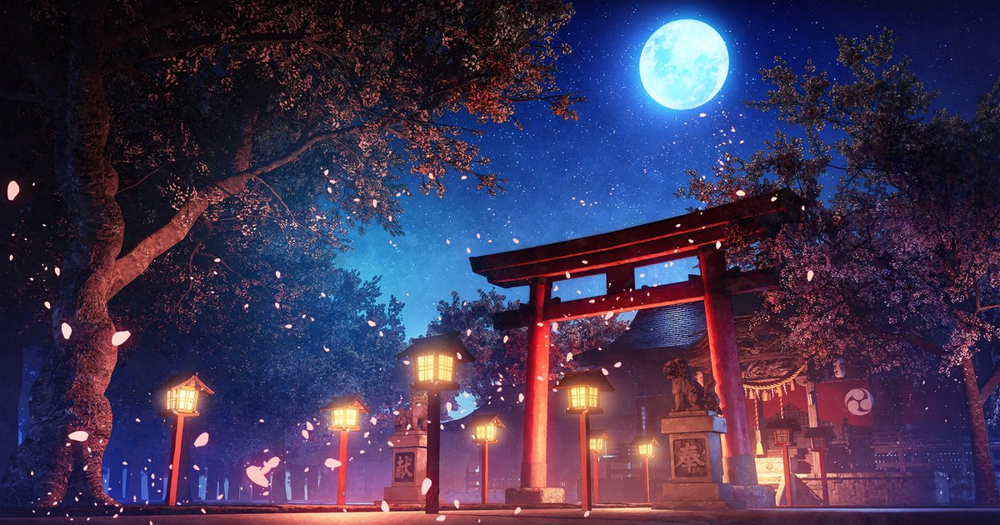

生駒駅 → 新石切駅 · Kintetsu Keihanna Line, no transfer
Board any train heading toward Nagata or Osaka on the Kintetsu Keihanna Line — every train stops at Shin-Ishikiri, so there's no train type to worry about here. One stop, no transfer.

Open Shin-Ishikiri Station in Google Maps